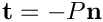

The purpose of this tutorial is to demonstrate the solution of 3D solid mechanics problems on unstructured meshes. The problem studied here also serves as a "warm-up problem" for the corresponding fluid-structure interaction problem in which the elastic, bifurcating vessel whose deformation is studied here conveys (and is loaded by) a viscous fluid.
The problem (and results)
Here is an animation of the problem: An elastic, bifurcating vessel is loaded by an internal pressure and by gravity which acts in the negative  -direction. The "ends" of the vessel are held in a fixed position. As the magnitude of the loading is increased the vessel inflates and sags downwards.
-direction. The "ends" of the vessel are held in a fixed position. As the magnitude of the loading is increased the vessel inflates and sags downwards.

The blue frame surrounding the vessel is drawn to clarify its spatial orientation. The yellow edges show the boundaries of the internal faces via which the pressure loading is applied, and the red arrows indicate the direction and magnitude of the pressure loading.
3D unstructured mesh generation
We use Hang Si's open-source mesh generator tetgen to generate the unstructured tetrahedral mesh "offline". We then process the output files produced by
tetgen to generate an unstructured oomph-lib mesh.
Tetgen requires the specification of the domain boundaries via so-called facets – planar surface patches that are bounded by closed polygonal line segments. For simplicity, we only consider a very simplistic bifurcation, comprising three tube segments of approximately rectangular cross-section that meet at a common junction. Each of the three tube segments has four internal and four external faces. The internal and external faces are connected by three further faces at the "in- and outflow" cross-sections (using terminology that anticipates the mesh's use in the corresponding fluid-structure interaction problem), resulting in a total of 27 facets.
The 27 facets are defined in a *.poly file that specifies the position of the vertices, and identifies the facets via a "face list" that establishes their bounding vertices. Facets that have holes (e.g. the in- and outflow facets) require the specification of the hole's position. Finally, if the mesh itself has a hole (as in the current example where the vessel's lumen forms a hole in the mesh) the position of the hole must be identified by specifying the position of a single point inside that hole. The well-annotated *.poly file is located at:
We refer to the tetgen webpages and another oomph-lib tutorial for further details on how to create *.poly files.
Here is a plot of the domain specified by fsi_bifurcation_solid.poly. The plot was created using tetview which is distributed with tetgen .
Note that we have deliberately assigned a different boundary ID to each facet. This will make the assignment of the traction boundary condition somewhat tedious as the inner surface of the vessel (where the traction is to be applied) is represented by twelve separate mesh boundaries. However, the assignment of distinct boundary IDs for the different facets is essential for the automatic generation of boundary coordinates in the corresponding fluid-structure interaction problem and is therefore strongly recommended.
Tetgen generates an unstructured volumetric mesh from the information contained in the *.poly file and writes the mesh's nodes, elements and faces in the files
- demo_drivers/solid/unstructured_three_d_solid/fsi_bifurcation_solid.1.node
- demo_drivers/solid/unstructured_three_d_solid/fsi_bifurcation_solid.1.ele
- demo_drivers/solid/unstructured_three_d_solid/fsi_bifurcation_solid.1.face
These files can be used as input to oomph-lib's TetgenMesh class, using the procedure discussed in another tutorial.
The figure below shows a tetview plot of the mesh, created with a volume constraint of 0.2 (i.e. the maximum volume of each tetrahedron is guaranteed to be less than 0.2 units), using the command

Note how tetgen has subdivided each of the 27 original facets specified in the *.poly file into a surface triangulation. The nodes and tetrahedral elements that are located on (or adjacent to) the 27 original facets inherit their boundary IDs. This will be important when we assign the boundary conditions.
Creating the mesh
We create the solid mesh by multiple inheritance from oomph-lib's TetgenMesh and the SolidMesh base class:
The constructor calls the constructor of the underlying TetgenMesh (using the *.node *.ele and *.face files created by tetgen. As usual we set the nodes' Lagrangian coordinates to their current Eulerian positions, making the current configuration stress-free.
Finally, we identify the elements that are located next to the various mesh boundaries to facilitate the application of the traction boundary conditions.
Problem parameters
As usual, we define the various problem parameters in a global namespace. We use oomph-lib's generalised Hookean constitutive law as the constitutive equation, using a Poisson's ratio of 0.3. (Recall that omitting the specification of Young's modulus,  , implies that the stresses are non-dimensionalised on .)
, implies that the stresses are non-dimensionalised on .)
Next we define the gravitational body force which acts in the negative -direction,
and the pressure load, , that acts on internal walls of the bifurcation (note that the outer unit normal  on the wall is passed to the function).
on the wall is passed to the function).
The driver code
The driver code is straightforward. We store the command line arguments, specify an output directory and create the problem object, using ten-noded tetrahedral solid mechanics elements to discretise the principle of virtual displacements.
We output the initial configuration and then perform a parameter study in which we increment the gravitational body force and the pressure loads simultaneously, causing the vessel to expand and sag, as shown in the animation at the beginning of this tutorial. (As usual we perform a smaller number of steps if the code is run in self-test mode; this is indicated by a non-zero number of command line arguments.)
The Problem class
The Problem class has the usual member functions, and provides storage for the various sub-meshes – the bulk mesh of 3D solid elements and the meshes of 2D solid traction elements that apply the pressure load to the internal boundaries of the vessel.
The two vectors Pinned_solid_boundary_id and Solid_traction_boundary_id are used to store the IDs of mesh boundaries that make up the in- and outflow cross-sections (where the bifurcation is pinned), and the internal boundaries (where the pressure load has to be applied). Recall that tetgen requires the domain boundaries to be specified as a collection of planar facets. Boundary of interest in the computation, such as the "internal boundary of the
bifurcation", therefore tend to comprise multiple distinct mesh boundaries.
The Problem constructor
We start by building the bulk mesh, using the files created by tetgen :
Next we specify the IDs of the tetgen boundaries that form part of specific domain boundaries in our problem. Boundaries 0, 1 and 2 are the in- and outflow faces along which the solid is pinned. (See the specification of the boundaries in fsi_bifurcation_solid.poly and/or check the boundary enumeration using tetview as shown in the tetview plot of the domain boundaries at the beginning of this tutorial.)
Similarly, boundaries 3 to 15 are the faces that define the internal boundary of the bifurcation, i.e. the boundary along which we have to apply the pressure load:
We apply the boundary conditions by pinning the displacements of all nodes that are located on the in- and outflow faces, and document their positions.
We complete the build of the elements by setting the pointer to the constitutive equation and the body force.
Next we create the traction elements, attaching them to the "bulk" solid elements that are adjacent to the boundaries that constitute the inside of the vessel.
Finally, we add the various meshes as sub-meshes to the Problem, build the global mesh, and assign the equation numbers.
Creating the traction elements
The helper function create_traction_elements() does exactly what it says: It loops over the bulk elements that are adjacent to the inner surface of the vessel, and attaches SolidTractionElements to the appropriate faces. We store the pointers to the newly-created traction elements in separate meshes and specify the function pointer to the load function.
Post-processing
The post-processing routine outputs the deformed domain shape and the applied traction.
Comments and Exercises
Identification/assignment of mesh boundaries
This tutorial shows that the use of unstructured 3D meshes for solid mechanics problems is extremely straightforward. The only aspect that requires some care (and not just for solid mechanics applications) is the correct identification/assignment of domain boundaries. The fact that we documented the position of the pinned nodes in the driver code suggests (correctly!) that we managed to get both assignments (slightly) wrong when we first generated the mesh and wrote the corresponding driver code. As usual, it pays off to be as a paranoid as possible! Ignore this advice at your own risk...
Here is a plot of the position of the pinned solid nodes
and here's a plot showing the SolidTractionElements attached to the inside of the vessel:
Exercise: Try it yourself
Experiment with the tetgen -based mesh generation by modifying the *.poly file used in this example to different vessel geometries.
Source files for this tutorial
- The source files for this tutorial are located in the directory:
demo_drivers/solid/unstructured_three_d_solid/
- The driver codes are:
demo_drivers/solid/unstructured_three_d_solid/unstructured_three_d_solid.cc anddemo_drivers/solid/unstructured_three_d_solid/unstructured_three_d_solid.cc
PDF file
A pdf version of this document is available.